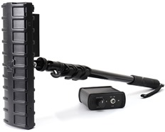

New Devices. ST-301 SPIDER and ST-600
- Read 1294 times
We would like to inform you that new devices series ST were released and now they are available for orders with a quick delivery.
ST-301 SPIDER-Wireline Analyzer.

ST-600- Combined Search Device. Designed to detect hidden operating electronic devices and trace cable lines.
